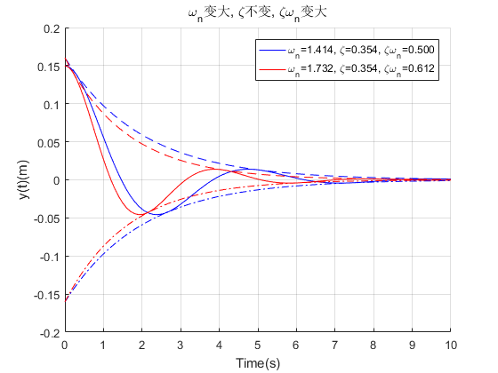
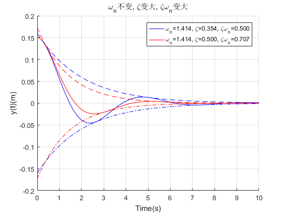
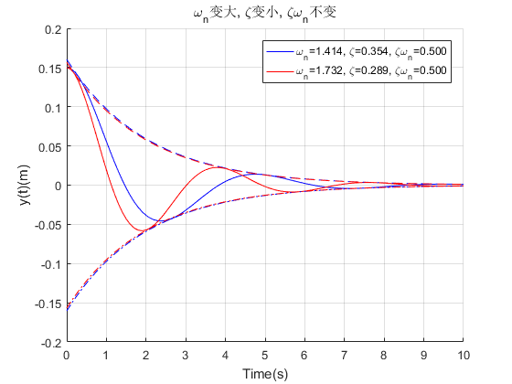

Contents
I. 清空数据
clear all; clc; close all;
II. 设定控制系统参数
y0 = 0.15; %初始能量 wn = [sqrt(2); sqrt(3); sqrt(2); sqrt(3)]; % 自然(固有)频率 zeta = [1/(2*sqrt(2)); 1/(2*sqrt(2)); 1/(2*sqrt(1)); 1/(2*sqrt(3))]; % 阻尼系数 wn_zeta = wn .* zeta;
III. 选择对比方案
t=[0:0.1:10]; compare = [1,2; 1,3; 1,4]; title_str = ['\omega_n变大, \zeta不变, \zeta\omega_n变大', '\omega_n不变, \zeta变大, \zeta\omega_n变大', '\omega_n变大, \zeta变小, \zeta\omega_n不变'];
IV. 直接使用解析结果输出零输入响应
1. 计算输出零输入响应
c = y0./sqrt(1-zeta.*zeta);
y = zeros(4, 101); % 零输入响应的解析解
y(1,:) = c(1)*exp(-wn_zeta(1)*t) .* sin(wn(1)*sqrt(1-zeta(1)^2)*t+acos(zeta(1)));
y(2,:) = c(2)*exp(-wn_zeta(2)*t) .* sin(wn(2)*sqrt(1-zeta(2)^2)*t+acos(zeta(2)));
y(3,:) = c(3)*exp(-wn_zeta(3)*t) .* sin(wn(3)*sqrt(1-zeta(3)^2)*t+acos(zeta(3)));
y(4,:) = c(4)*exp(-wn_zeta(4)*t) .* sin(wn(4)*sqrt(1-zeta(4)^2)*t+acos(zeta(4)));
2. 计算包络线
bu = zeros(4, 101); bu(1,:) = c(1)*exp(-wn_zeta(1)*t); bu(2,:) = c(2)*exp(-wn_zeta(2)*t); bu(3,:) = c(3)*exp(-wn_zeta(3)*t); bu(4,:) = c(4)*exp(-wn_zeta(4)*t); bl = -bu;
3. 画图
for i=1:size(compare, 1) figure(i); hold on; plot(t,y(compare(i,1),:),'b-'); plot(t,y(compare(i,2),:),'r-'); plot(t,bu(compare(i,1),:),'b--', t,bl(compare(i,1),:),'b-.'); plot(t,bu(compare(i,2),:),'r--', t,bl(compare(i,2),:),'r-.'); xlabel('Time(s)') ylabel('y(t)(m)') legend(['\omega_n=', num2str(wn(compare(i,1)),'%.3f'),... ', \zeta=', num2str(zeta(compare(i,1)),'%.3f'),... ', \zeta\omega_n=', num2str(wn_zeta(compare(i,1)),'%.3f')],... ['\omega_n=', num2str(wn(compare(i,2)),'%.3f'),... ', \zeta=', num2str(zeta(compare(i,2)),'%.3f'),... ', \zeta\omega_n=', num2str(wn_zeta(compare(i,2)),'%.3f')]) title(title_str(i,:)) grid end  
V 分析
1. 从figure1可以看出，wn增大会加快震荡，这也是wn称之为固有频率的原因
2. 从figure2可以看出来，zeta增大会导致在同一个周期内能量消耗加快，这也是zeta称之为阻尼系数的原因
3. 从figure3可以看出来，无论wn和zeta如何变化，只要zeta*wn不变，那么系统的衰减效率就不变 这是因为虽然wn变大导致单位时间内有更多次震荡了，但是根据2可知，zeta变小会导致每次震荡的衰减变小 综合下来就导致单位时间的衰减效率就没有变化，因此zeta*wn是收敛效率